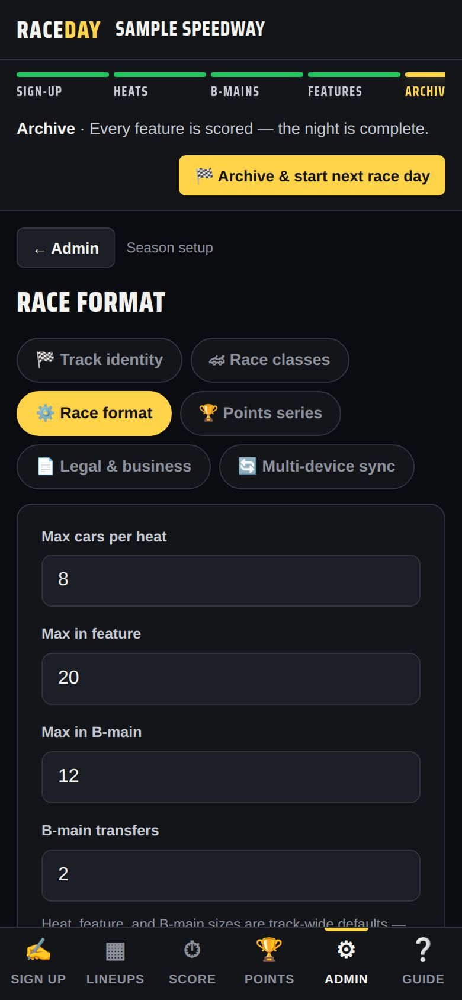
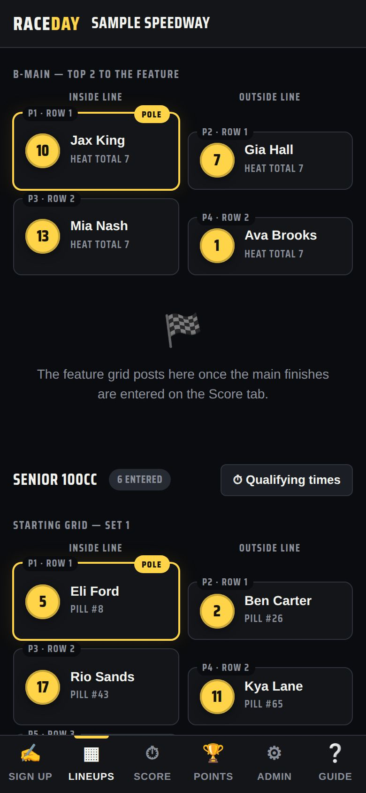
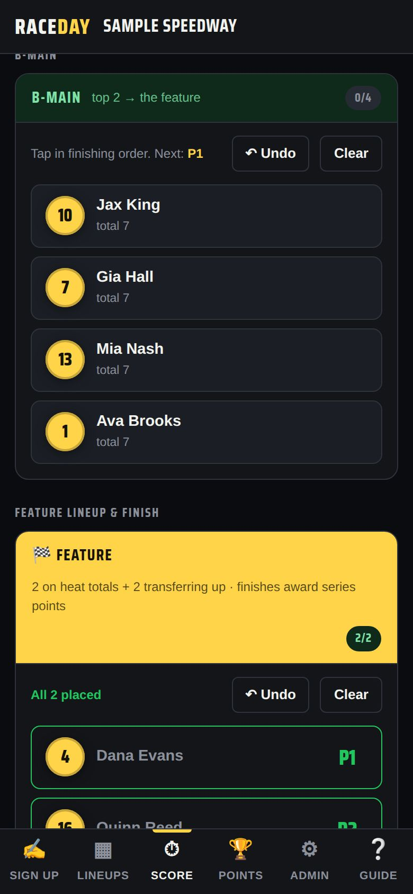

-
When B-mains happen
Only when a class has more drivers than Max in feature. Otherwise everyone goes straight to the feature.
-
Pick a B-main style
In Admin → Race format, B-mains has three options:
- Single — one B-main; drivers past it don't race
- Parallel — everyone left splits into equal B-mains, and the top of each goes to the feature; nobody is cut
- Cascade — B, C, D-mains; the lowest runs first and the top finishers climb up main by main
How many (for parallel and cascade), Max in B-main and B-main transfers sit alongside.

Race format -
On race night
Once the heats are scored, the Race Control bar shows “B-mains · … left to score.” Each B-main appears on Lineups with how many transfer — like “top 2 to the feature.”

B-main lineup -
Score the B-main
Score it on the Score tab like any race. The transfers drop straight into the feature lineup.

Scoring a B-main -
DNF promotion
If a B-main has fewer finishers than transfer spots, cars that DNF'd move up in running order to fill them. DNS and DQ cars never advance.
Good to know
- Set a different B-main size for one class under Sizes in Race classes, and flip the front of a B-main with Main invert.
Next guides
Still stuck? The Field Manual walks through every screen, and the FAQ covers common questions. Or just ask.
Email a question →